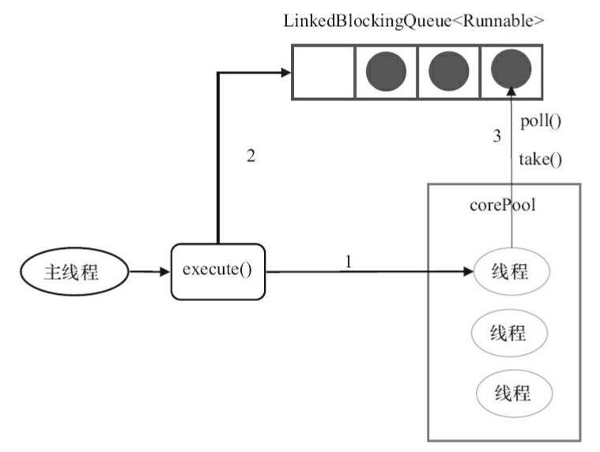
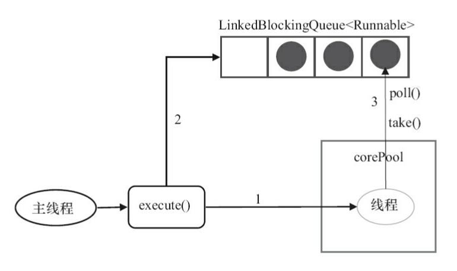
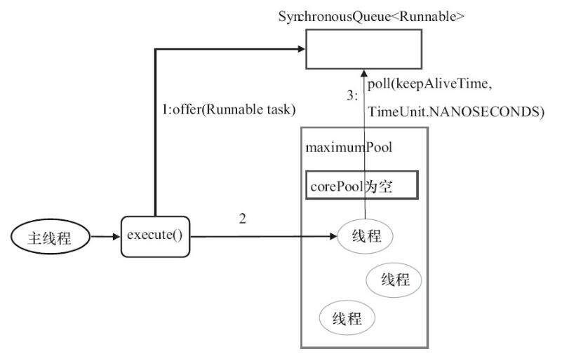

一 使用线程池的好处
池化技术想必大家已经屡见不鲜了，线程池、数据库连接池、Http 连接池等等都是对这个思想的应用。池化技术的思想主要是为了减少每次获取资源的消耗，提高对资源的利用率。
线程池提供了一种限制和管理资源（包括执行一个任务）。 每个线程池还维护一些基本统计信息，例如已完成任务的数量。
这里借用《Java 并发编程的艺术》提到的来说一下使用线程池的好处：
- 降低资源消耗。通过重复利用已创建的线程降低线程创建和销毁造成的消耗。
- 提高响应速度。当任务到达时，任务可以不需要等到线程创建就能立即执行。
- 提高线程的可管理性。线程是稀缺资源，如果无限制的创建，不仅会消耗系统资源，还会降低系统的稳定性，使用线程池可以进行统一的分配，调优和监控。
二 Executor 框架
2.1 简介
Executor 框架是 Java5 之后引进的，在 Java 5 之后，通过 Executor 来启动线程比使用 Thread 的 start 方法更好，除了更易管理，效率更好（用线程池实现，节约开销）外，还有关键的一点：有助于避免 this 逃逸问题。
补充：this 逃逸是指在构造函数返回之前其他线程就持有该对象的引用. 调用尚未构造完全的对象的方法可能引发令人疑惑的错误。
Executor 框架不仅包括了线程池的管理，还提供了线程工厂、队列以及拒绝策略等，Executor 框架让并发编程变得更加简单。
2.2 Executor 框架结构(主要由三大部分组成)
1) 任务(Runnable /Callable)
执行任务需要实现的 Runnable 接口 或 Callable接口。Runnable 接口或 Callable 接口 实现类都可以被 ThreadPoolExecutor 或 ScheduledThreadPoolExecutor 执行。
2) 任务的执行(Executor)
如下图所示，包括任务执行机制的核心接口 Executor ，以及继承自 Executor 接口的 ExecutorService 接口。ThreadPoolExecutor 和 ScheduledThreadPoolExecutor 这两个关键类实现了 ExecutorService 接口。
这里提了很多底层的类关系，但是，实际上我们需要更多关注的是 ThreadPoolExecutor 这个类，这个类在我们实际使用线程池的过程中，使用频率还是非常高的。
注意： 通过查看
ScheduledThreadPoolExecutor源代码我们发现ScheduledThreadPoolExecutor实际上是继承了ThreadPoolExecutor并实现了 ScheduledExecutorService ，而ScheduledExecutorService又实现了ExecutorService，正如我们下面给出的类关系图显示的一样。
ThreadPoolExecutor 类描述:
//AbstractExecutorService实现了ExecutorService接口
public class ThreadPoolExecutor extends AbstractExecutorService
ScheduledThreadPoolExecutor 类描述:
//ScheduledExecutorService继承ExecutorService接口
public class ScheduledThreadPoolExecutor
extends ThreadPoolExecutor
implements ScheduledExecutorService

3) 异步计算的结果(Future)
Future 接口以及 Future 接口的实现类 FutureTask 类都可以代表异步计算的结果。
当我们把 Runnable接口 或 Callable 接口 的实现类提交给 ThreadPoolExecutor 或 ScheduledThreadPoolExecutor 执行。（调用 submit() 方法时会返回一个 FutureTask 对象）
2.3 Executor 框架的使用示意图

- 主线程首先要创建实现
Runnable或者Callable接口的任务对象。 - 把创建完成的实现
Runnable/Callable接口的 对象直接交给ExecutorService执行:ExecutorService.execute（Runnable command））或者也可以把Runnable对象或Callable对象提交给ExecutorService执行（ExecutorService.submit（Runnable task）或ExecutorService.submit（Callable <T> task））。 - 如果执行
ExecutorService.submit（…），ExecutorService将返回一个实现Future接口的对象（我们刚刚也提到过了执行execute()方法和submit()方法的区别，submit()会返回一个FutureTask 对象）。由于 FutureTask实现了Runnable，我们也可以创建FutureTask，然后直接交给ExecutorService执行。 - 最后，主线程可以执行
FutureTask.get()方法来等待任务执行完成。主线程也可以执行FutureTask.cancel（boolean mayInterruptIfRunning）来取消此任务的执行。
三 (重要)ThreadPoolExecutor 类简单介绍
线程池实现类 ThreadPoolExecutor 是 Executor 框架最核心的类。
3.1 ThreadPoolExecutor 类分析
ThreadPoolExecutor 类中提供的四个构造方法。我们来看最长的那个，其余三个都是在这个构造方法的基础上产生（其他几个构造方法说白点都是给定某些默认参数的构造方法比如默认制定拒绝策略是什么）。
/**
* 用给定的初始参数创建一个新的ThreadPoolExecutor。
*/
public ThreadPoolExecutor(int corePoolSize,//线程池的核心线程数量
int maximumPoolSize,//线程池的最大线程数
long keepAliveTime,//当线程数大于核心线程数时，多余的空闲线程存活的最长时间
TimeUnit unit,//时间单位
BlockingQueue<Runnable> workQueue,//任务队列，用来储存等待执行任务的队列
ThreadFactory threadFactory,//线程工厂，用来创建线程，一般默认即可
RejectedExecutionHandler handler//拒绝策略，当提交的任务过多而不能及时处理时，我们可以定制策略来处理任务
) {
if (corePoolSize < 0 ||
maximumPoolSize <= 0 ||
maximumPoolSize < corePoolSize ||
keepAliveTime < 0)
throw new IllegalArgumentException();
if (workQueue == null || threadFactory == null || handler == null)
throw new NullPointerException();
this.corePoolSize = corePoolSize;
this.maximumPoolSize = maximumPoolSize;
this.workQueue = workQueue;
this.keepAliveTime = unit.toNanos(keepAliveTime);
this.threadFactory = threadFactory;
this.handler = handler;
}
下面这些对创建非常重要，在后面使用线程池的过程中你一定会用到！所以，务必拿着小本本记清楚。
ThreadPoolExecutor 3 个最重要的参数：
corePoolSize: 核心线程数线程数定义了最小可以同时运行的线程数量。maximumPoolSize: 当队列中存放的任务达到队列容量的时候，当前可以同时运行的线程数量变为最大线程数。workQueue: 当新任务来的时候会先判断当前运行的线程数量是否达到核心线程数，如果达到的话，新任务就会被存放在队列中。
ThreadPoolExecutor其他常见参数 :
keepAliveTime:当线程池中的线程数量大于corePoolSize的时候，如果这时没有新的任务提交，核心线程外的线程不会立即销毁，而是会等待，直到等待的时间超过了keepAliveTime才会被回收销毁；unit:keepAliveTime参数的时间单位。threadFactory:executor 创建新线程的时候会用到。handler:饱和策略。关于饱和策略下面单独介绍一下。
下面这张图可以加深你对线程池中各个参数的相互关系的理解（图片来源：《Java 性能调优实战》）：

ThreadPoolExecutor 饱和策略定义:
如果当前同时运行的线程数量达到最大线程数量并且队列也已经被放满了任务时，ThreadPoolTaskExecutor 定义一些策略:
ThreadPoolExecutor.AbortPolicy：抛出RejectedExecutionException来拒绝新任务的处理。ThreadPoolExecutor.CallerRunsPolicy：调用执行自己的线程运行任务，也就是直接在调用execute方法的线程中运行(run)被拒绝的任务，如果执行程序已关闭，则会丢弃该任务。因此这种策略会降低对于新任务提交速度，影响程序的整体性能。如果您的应用程序可以承受此延迟并且你要求任何一个任务请求都要被执行的话，你可以选择这个策略。ThreadPoolExecutor.DiscardPolicy：不处理新任务，直接丢弃掉。ThreadPoolExecutor.DiscardOldestPolicy： 此策略将丢弃最早的未处理的任务请求。
举个例子：
Spring 通过
ThreadPoolTaskExecutor或者我们直接通过ThreadPoolExecutor的构造函数创建线程池的时候，当我们不指定RejectedExecutionHandler饱和策略的话来配置线程池的时候默认使用的是ThreadPoolExecutor.AbortPolicy。在默认情况下，ThreadPoolExecutor将抛出RejectedExecutionException来拒绝新来的任务 ，这代表你将丢失对这个任务的处理。 对于可伸缩的应用程序，建议使用ThreadPoolExecutor.CallerRunsPolicy。当最大池被填满时，此策略为我们提供可伸缩队列。（这个直接查看ThreadPoolExecutor的构造函数源码就可以看出，比较简单的原因，这里就不贴代码了。）
3.2 推荐使用 ThreadPoolExecutor 构造函数创建线程池
在《阿里巴巴 Java 开发手册》“并发处理”这一章节，明确指出线程资源必须通过线程池提供，不允许在应用中自行显式创建线程。
为什么呢？
使用线程池的好处是减少在创建和销毁线程上所消耗的时间以及系统资源开销，解决资源不足的问题。如果不使用线程池，有可能会造成系统创建大量同类线程而导致消耗完内存或者“过度切换”的问题。
另外，《阿里巴巴 Java 开发手册》中强制线程池不允许使用 Executors 去创建，而是通过 ThreadPoolExecutor 构造函数的方式，这样的处理方式让写的同学更加明确线程池的运行规则，规避资源耗尽的风险
Executors返回线程池对象的弊端如下(后文会详细介绍到)：
FixedThreadPool和SingleThreadExecutor： 允许请求的队列长度为Integer.MAX_VALUE,可能堆积大量的请求，从而导致 OOM。CachedThreadPool和ScheduledThreadPool： 允许创建的线程数量为Integer.MAX_VALUE，可能会创建大量线程，从而导致 OOM。
方式一：通过ThreadPoolExecutor构造函数实现（推荐）

方式二：通过 Executor 框架的工具类 Executors 来实现
我们可以创建三种类型的 ThreadPoolExecutor：
FixedThreadPoolSingleThreadExecutor- CachedThreadPool
对应 Executors 工具类中的方法如图所示：

四 ThreadPoolExecutor 使用+原理分析
我们上面讲解了 Executor框架以及 ThreadPoolExecutor 类，下面让我们实战一下，来通过写一个 ThreadPoolExecutor 的小 Demo 来回顾上面的内容。
4.1 示例代码:Runnable+ThreadPoolExecutor
首先创建一个 Runnable 接口的实现类（当然也可以是 Callable 接口，我们上面也说了两者的区别。）
MyRunnable.java
import java.util.Date;
/**
* 这是一个简单的Runnable类，需要大约5秒钟来执行其任务。
* @author shuang.kou
*/
public class MyRunnable implements Runnable {
private String command;
public MyRunnable(String s) {
this.command = s;
}
@Override
public void run() {
System.out.println(Thread.currentThread().getName() + " Start. Time = " + new Date());
processCommand();
System.out.println(Thread.currentThread().getName() + " End. Time = " + new Date());
}
private void processCommand() {
try {
Thread.sleep(5000);
} catch (InterruptedException e) {
e.printStackTrace();
}
}
@Override
public String toString() {
return this.command;
}
}
编写测试程序，我们这里以阿里巴巴推荐的使用 ThreadPoolExecutor 构造函数自定义参数的方式来创建线程池。
ThreadPoolExecutorDemo.java
import java.util.concurrent.ArrayBlockingQueue;
import java.util.concurrent.ThreadPoolExecutor;
import java.util.concurrent.TimeUnit;
public class ThreadPoolExecutorDemo {
private static final int CORE_POOL_SIZE = 5;
private static final int MAX_POOL_SIZE = 10;
private static final int QUEUE_CAPACITY = 100;
private static final Long KEEP_ALIVE_TIME = 1L;
public static void main(String[] args) {
//使用阿里巴巴推荐的创建线程池的方式
//通过ThreadPoolExecutor构造函数自定义参数创建
ThreadPoolExecutor executor = new ThreadPoolExecutor(
CORE_POOL_SIZE,
MAX_POOL_SIZE,
KEEP_ALIVE_TIME,
TimeUnit.SECONDS,
new ArrayBlockingQueue<>(QUEUE_CAPACITY),
new ThreadPoolExecutor.CallerRunsPolicy());
for (int i = 0; i < 10; i++) {
//创建WorkerThread对象（WorkerThread类实现了Runnable 接口）
Runnable worker = new MyRunnable("" + i);
//执行Runnable
executor.execute(worker);
}
//终止线程池
executor.shutdown();
while (!executor.isTerminated()) {
}
System.out.println("Finished all threads");
}
}
可以看到我们上面的代码指定了：
corePoolSize: 核心线程数为 5。maximumPoolSize：最大线程数 10keepAliveTime: 等待时间为 1L。unit: 等待时间的单位为 TimeUnit.SECONDS。workQueue：任务队列为ArrayBlockingQueue，并且容量为 100;handler:饱和策略为CallerRunsPolicy。
Output：
pool-1-thread-3 Start. Time = Sun Apr 12 11:14:37 CST 2020
pool-1-thread-5 Start. Time = Sun Apr 12 11:14:37 CST 2020
pool-1-thread-2 Start. Time = Sun Apr 12 11:14:37 CST 2020
pool-1-thread-1 Start. Time = Sun Apr 12 11:14:37 CST 2020
pool-1-thread-4 Start. Time = Sun Apr 12 11:14:37 CST 2020
pool-1-thread-3 End. Time = Sun Apr 12 11:14:42 CST 2020
pool-1-thread-4 End. Time = Sun Apr 12 11:14:42 CST 2020
pool-1-thread-1 End. Time = Sun Apr 12 11:14:42 CST 2020
pool-1-thread-5 End. Time = Sun Apr 12 11:14:42 CST 2020
pool-1-thread-1 Start. Time = Sun Apr 12 11:14:42 CST 2020
pool-1-thread-2 End. Time = Sun Apr 12 11:14:42 CST 2020
pool-1-thread-5 Start. Time = Sun Apr 12 11:14:42 CST 2020
pool-1-thread-4 Start. Time = Sun Apr 12 11:14:42 CST 2020
pool-1-thread-3 Start. Time = Sun Apr 12 11:14:42 CST 2020
pool-1-thread-2 Start. Time = Sun Apr 12 11:14:42 CST 2020
pool-1-thread-1 End. Time = Sun Apr 12 11:14:47 CST 2020
pool-1-thread-4 End. Time = Sun Apr 12 11:14:47 CST 2020
pool-1-thread-5 End. Time = Sun Apr 12 11:14:47 CST 2020
pool-1-thread-3 End. Time = Sun Apr 12 11:14:47 CST 2020
pool-1-thread-2 End. Time = Sun Apr 12 11:14:47 CST 2020
4.2 线程池原理分析
承接 4.1 节，我们通过代码输出结果可以看出：线程池首先会先执行 5 个任务，然后这些任务有任务被执行完的话，就会去拿新的任务执行。 大家可以先通过上面讲解的内容，分析一下到底是咋回事？（自己独立思考一会）
现在，我们就分析上面的输出内容来简单分析一下线程池原理。
为了搞懂线程池的原理，我们需要首先分析一下 execute方法。 在 4.1 节中的 Demo 中我们使用 executor.execute(worker)来提交一个任务到线程池中去，这个方法非常重要，下面我们来看看它的源码：
// 存放线程池的运行状态 (runState) 和线程池内有效线程的数量 (workerCount)
private final AtomicInteger ctl = new AtomicInteger(ctlOf(RUNNING, 0));
private static int workerCountOf(int c) {
return c & CAPACITY;
}
//任务队列
private final BlockingQueue<Runnable> workQueue;
public void execute(Runnable command) {
// 如果任务为null，则抛出异常。
if (command == null)
throw new NullPointerException();
// ctl 中保存的线程池当前的一些状态信息
int c = ctl.get();
// 下面会涉及到 3 步 操作
// 1.首先判断当前线程池中之行的任务数量是否小于 corePoolSize
// 如果小于的话，通过addWorker(command, true)新建一个线程，并将任务(command)添加到该线程中；然后，启动该线程从而执行任务。
if (workerCountOf(c) < corePoolSize) {
if (addWorker(command, true))
return;
c = ctl.get();
}
// 2.如果当前之行的任务数量大于等于 corePoolSize 的时候就会走到这里
// 通过 isRunning 方法判断线程池状态，线程池处于 RUNNING 状态才会被并且队列可以加入任务，该任务才会被加入进去
if (isRunning(c) && workQueue.offer(command)) {
int recheck = ctl.get();
// 再次获取线程池状态，如果线程池状态不是 RUNNING 状态就需要从任务队列中移除任务，并尝试判断线程是否全部执行完毕。同时执行拒绝策略。
if (!isRunning(recheck) && remove(command))
reject(command);
// 如果当前线程池为空就新创建一个线程并执行。
else if (workerCountOf(recheck) == 0)
addWorker(null, false);
}
//3. 通过addWorker(command, false)新建一个线程，并将任务(command)添加到该线程中；然后，启动该线程从而执行任务。
//如果addWorker(command, false)执行失败，则通过reject()执行相应的拒绝策略的内容。
else if (!addWorker(command, false))
reject(command);
}
通过下图可以更好的对上面这 3 步做一个展示，下图是我为了省事直接从网上找到，原地址不明。

addWorker 这个方法主要用来创建新的工作线程，如果返回 true 说明创建和启动工作线程成功，否则的话返回的就是 false。
// 全局锁，并发操作必备
private final ReentrantLock mainLock = new ReentrantLock();
// 跟踪线程池的最大大小，只有在持有全局锁mainLock的前提下才能访问此集合
private int largestPoolSize;
// 工作线程集合，存放线程池中所有的（活跃的）工作线程，只有在持有全局锁mainLock的前提下才能访问此集合
private final HashSet<Worker> workers = new HashSet<>();
//获取线程池状态
private static int runStateOf(int c) { return c & ~CAPACITY; }
//判断线程池的状态是否为 Running
private static boolean isRunning(int c) {
return c < SHUTDOWN;
}
/**
* 添加新的工作线程到线程池
* @param firstTask 要执行
* @param core参数为true的话表示使用线程池的基本大小，为false使用线程池最大大小
* @return 添加成功就返回true否则返回false
*/
private boolean addWorker(Runnable firstTask, boolean core) {
retry:
for (;;) {
//这两句用来获取线程池的状态
int c = ctl.get();
int rs = runStateOf(c);
// Check if queue empty only if necessary.
if (rs >= SHUTDOWN &&
! (rs == SHUTDOWN &&
firstTask == null &&
! workQueue.isEmpty()))
return false;
for (;;) {
//获取线程池中线程的数量
int wc = workerCountOf(c);
// core参数为true的话表明队列也满了，线程池大小变为 maximumPoolSize
if (wc >= CAPACITY ||
wc >= (core ? corePoolSize : maximumPoolSize))
return false;
//原子操作将workcount的数量加1
if (compareAndIncrementWorkerCount(c))
break retry;
// 如果线程的状态改变了就再次执行上述操作
c = ctl.get();
if (runStateOf(c) != rs)
continue retry;
// else CAS failed due to workerCount change; retry inner loop
}
}
// 标记工作线程是否启动成功
boolean workerStarted = false;
// 标记工作线程是否创建成功
boolean workerAdded = false;
Worker w = null;
try {
w = new Worker(firstTask);
final Thread t = w.thread;
if (t != null) {
// 加锁
final ReentrantLock mainLock = this.mainLock;
mainLock.lock();
try {
//获取线程池状态
int rs = runStateOf(ctl.get());
//rs < SHUTDOWN 如果线程池状态依然为RUNNING,并且线程的状态是存活的话，就会将工作线程添加到工作线程集合中
//(rs=SHUTDOWN && firstTask == null)如果线程池状态小于STOP，也就是RUNNING或者SHUTDOWN状态下，同时传入的任务实例firstTask为null，则需要添加到工作线程集合和启动新的Worker
// firstTask == null证明只新建线程而不执行任务
if (rs < SHUTDOWN ||
(rs == SHUTDOWN && firstTask == null)) {
if (t.isAlive()) // precheck that t is startable
throw new IllegalThreadStateException();
workers.add(w);
//更新当前工作线程的最大容量
int s = workers.size();
if (s > largestPoolSize)
largestPoolSize = s;
// 工作线程是否启动成功
workerAdded = true;
}
} finally {
// 释放锁
mainLock.unlock();
}
//// 如果成功添加工作线程，则调用Worker内部的线程实例t的Thread#start()方法启动真实的线程实例
if (workerAdded) {
t.start();
/// 标记线程启动成功
workerStarted = true;
}
}
} finally {
// 线程启动失败，需要从工作线程中移除对应的Worker
if (! workerStarted)
addWorkerFailed(w);
}
return workerStarted;
}
更多关于线程池源码分析的内容推荐这篇文章：《JUC 线程池 ThreadPoolExecutor 源码分析》
现在，让我们在回到 4.1 节我们写的 Demo， 现在应该是不是很容易就可以搞懂它的原理了呢？
没搞懂的话，也没关系，可以看看我的分析：
我们在代码中模拟了 10 个任务，我们配置的核心线程数为 5 、等待队列容量为 100 ，所以每次只可能存在 5 个任务同时执行，剩下的 5 个任务会被放到等待队列中去。当前的 5 个任务中如果有任务被执行完了，线程池就会去拿新的任务执行。
4.3 几个常见的对比
4.3.1 Runnable vs Callable
Runnable自 Java 1.0 以来一直存在，但Callable仅在 Java 1.5 中引入,目的就是为了来处理Runnable不支持的用例。Runnable 接口不会返回结果或抛出检查异常，但是 Callable 接口可以。所以，如果任务不需要返回结果或抛出异常推荐使用 Runnable 接口，这样代码看起来会更加简洁。
工具类 Executors 可以实现将 Runnable 对象转换成 Callable 对象。（Executors.callable(Runnable task) 或 Executors.callable(Runnable task, Object result)）。
Runnable.java
@FunctionalInterface
public interface Runnable {
/**
* 被线程执行，没有返回值也无法抛出异常
*/
public abstract void run();
}
Callable.java
@FunctionalInterface
public interface Callable<V> {
/**
* 计算结果，或在无法这样做时抛出异常。
* @return 计算得出的结果
* @throws 如果无法计算结果，则抛出异常
*/
V call() throws Exception;
}
4.3.2 execute() vs submit()
execute()方法用于提交不需要返回值的任务，所以无法判断任务是否被线程池执行成功与否；submit()方法用于提交需要返回值的任务。线程池会返回一个Future类型的对象，通过这个Future对象可以判断任务是否执行成功，并且可以通过Future的get()方法来获取返回值，get()方法会阻塞当前线程直到任务完成，而使用get（long timeout，TimeUnit unit）方法则会阻塞当前线程一段时间后立即返回，这时候有可能任务没有执行完。
我们以 AbstractExecutorService 接口中的一个 submit() 方法为例子来看看源代码：
public Future<?> submit(Runnable task) {
if (task == null) throw new NullPointerException();
RunnableFuture<Void> ftask = newTaskFor(task, null);
execute(ftask);
return ftask;
}
上面方法调用的 newTaskFor 方法返回了一个 FutureTask 对象。
protected <T> RunnableFuture<T> newTaskFor(Runnable runnable, T value) {
return new FutureTask<T>(runnable, value);
}
我们再来看看execute()方法：
public void execute(Runnable command) {
...
}
4.3.3 shutdown()VSshutdownNow()
shutdown（）:关闭线程池，线程池的状态变为SHUTDOWN。线程池不再接受新任务了，但是队列里的任务得执行完毕。shutdownNow（）:关闭线程池，线程的状态变为STOP。线程池会终止当前正在运行的任务，并停止处理排队的任务并返回正在等待执行的 List。
4.3.2 isTerminated() VS isShutdown()
isShutDown当调用shutdown()方法后返回为 true。isTerminated当调用shutdown()方法后，并且所有提交的任务完成后返回为 true
4.4 加餐:Callable+ThreadPoolExecutor示例代码
MyCallable.java
import java.util.concurrent.Callable;
public class MyCallable implements Callable<String> {
@Override
public String call() throws Exception {
Thread.sleep(1000);
//返回执行当前 Callable 的线程名字
return Thread.currentThread().getName();
}
}
CallableDemo.java
import java.util.ArrayList;
import java.util.Date;
import java.util.List;
import java.util.concurrent.ArrayBlockingQueue;
import java.util.concurrent.Callable;
import java.util.concurrent.ExecutionException;
import java.util.concurrent.Future;
import java.util.concurrent.ThreadPoolExecutor;
import java.util.concurrent.TimeUnit;
public class CallableDemo {
private static final int CORE_POOL_SIZE = 5;
private static final int MAX_POOL_SIZE = 10;
private static final int QUEUE_CAPACITY = 100;
private static final Long KEEP_ALIVE_TIME = 1L;
public static void main(String[] args) {
//使用阿里巴巴推荐的创建线程池的方式
//通过ThreadPoolExecutor构造函数自定义参数创建
ThreadPoolExecutor executor = new ThreadPoolExecutor(
CORE_POOL_SIZE,
MAX_POOL_SIZE,
KEEP_ALIVE_TIME,
TimeUnit.SECONDS,
new ArrayBlockingQueue<>(QUEUE_CAPACITY),
new ThreadPoolExecutor.CallerRunsPolicy());
List<Future<String>> futureList = new ArrayList<>();
Callable<String> callable = new MyCallable();
for (int i = 0; i < 10; i++) {
//提交任务到线程池
Future<String> future = executor.submit(callable);
//将返回值 future 添加到 list，我们可以通过 future 获得 执行 Callable 得到的返回值
futureList.add(future);
}
for (Future<String> fut : futureList) {
try {
System.out.println(new Date() + "::" + fut.get());
} catch (InterruptedException | ExecutionException e) {
e.printStackTrace();
}
}
//关闭线程池
executor.shutdown();
}
}
Output:
Wed Nov 13 13:40:41 CST 2019::pool-1-thread-1
Wed Nov 13 13:40:42 CST 2019::pool-1-thread-2
Wed Nov 13 13:40:42 CST 2019::pool-1-thread-3
Wed Nov 13 13:40:42 CST 2019::pool-1-thread-4
Wed Nov 13 13:40:42 CST 2019::pool-1-thread-5
Wed Nov 13 13:40:42 CST 2019::pool-1-thread-3
Wed Nov 13 13:40:43 CST 2019::pool-1-thread-2
Wed Nov 13 13:40:43 CST 2019::pool-1-thread-1
Wed Nov 13 13:40:43 CST 2019::pool-1-thread-4
Wed Nov 13 13:40:43 CST 2019::pool-1-thread-5
五 几种常见的线程池详解
5.1 FixedThreadPool
5.1.1 介绍
FixedThreadPool 被称为可重用固定线程数的线程池。通过 Executors 类中的相关源代码来看一下相关实现：
/**
* 创建一个可重用固定数量线程的线程池
*/
public static ExecutorService newFixedThreadPool(int nThreads, ThreadFactory threadFactory) {
return new ThreadPoolExecutor(nThreads, nThreads,
0L, TimeUnit.MILLISECONDS,
new LinkedBlockingQueue<Runnable>(),
threadFactory);
}
另外还有一个 FixedThreadPool 的实现方法，和上面的类似，所以这里不多做阐述：
public static ExecutorService newFixedThreadPool(int nThreads) {
return new ThreadPoolExecutor(nThreads, nThreads,
0L, TimeUnit.MILLISECONDS,
new LinkedBlockingQueue<Runnable>());
}
从上面源代码可以看出新创建的 FixedThreadPool 的 corePoolSize 和 maximumPoolSize 都被设置为 nThreads，这个 nThreads 参数是我们使用的时候自己传递的。
5.1.2 执行任务过程介绍
FixedThreadPool 的 execute() 方法运行示意图（该图片来源：《Java 并发编程的艺术》）：

上图说明：
- 如果当前运行的线程数小于 corePoolSize， 如果再来新任务的话，就创建新的线程来执行任务；
- 当前运行的线程数等于 corePoolSize 后， 如果再来新任务的话，会将任务加入
LinkedBlockingQueue； - 线程池中的线程执行完 手头的任务后，会在循环中反复从
LinkedBlockingQueue中获取任务来执行；
5.1.3 为什么不推荐使用FixedThreadPool？
FixedThreadPool 使用无界队列 LinkedBlockingQueue（队列的容量为 Integer.MAX_VALUE）作为线程池的工作队列会对线程池带来如下影响 ：
- 当线程池中的线程数达到
corePoolSize后，新任务将在无界队列中等待，因此线程池中的线程数不会超过 corePoolSize； - 由于使用无界队列时
maximumPoolSize将是一个无效参数，因为不可能存在任务队列满的情况。所以，通过创建FixedThreadPool的源码可以看出创建的FixedThreadPool的corePoolSize和maximumPoolSize被设置为同一个值。 - 由于 1 和 2，使用无界队列时
keepAliveTime将是一个无效参数； - 运行中的
FixedThreadPool（未执行shutdown()或shutdownNow()）不会拒绝任务，在任务比较多的时候会导致 OOM（内存溢出）。
5.2 SingleThreadExecutor 详解
5.2.1 介绍
SingleThreadExecutor 是只有一个线程的线程池。下面看看SingleThreadExecutor 的实现：
/**
*返回只有一个线程的线程池
*/
public static ExecutorService newSingleThreadExecutor(ThreadFactory threadFactory) {
return new FinalizableDelegatedExecutorService
(new ThreadPoolExecutor(1, 1,
0L, TimeUnit.MILLISECONDS,
new LinkedBlockingQueue<Runnable>(),
threadFactory));
}
public static ExecutorService newSingleThreadExecutor() {
return new FinalizableDelegatedExecutorService
(new ThreadPoolExecutor(1, 1,
0L, TimeUnit.MILLISECONDS,
new LinkedBlockingQueue<Runnable>()));
}
从上面源代码可以看出新创建的 SingleThreadExecutor 的 corePoolSize 和 maximumPoolSize 都被设置为 1.其他参数和 FixedThreadPool 相同。
5.2.2 执行任务过程介绍
SingleThreadExecutor 的运行示意图（该图片来源：《Java 并发编程的艺术》）：

上图说明 :
- 如果当前运行的线程数少于
corePoolSize，则创建一个新的线程执行任务； - 当前线程池中有一个运行的线程后，将任务加入
LinkedBlockingQueue - 线程执行完当前的任务后，会在循环中反复从
LinkedBlockingQueue中获取任务来执行；
5.2.3 为什么不推荐使用SingleThreadExecutor？
SingleThreadExecutor 使用无界队列 LinkedBlockingQueue 作为线程池的工作队列（队列的容量为 Intger.MAX_VALUE）。SingleThreadExecutor 使用无界队列作为线程池的工作队列会对线程池带来的影响与 FixedThreadPool 相同。说简单点就是可能会导致 OOM，
5.3 CachedThreadPool 详解
5.3.1 介绍
CachedThreadPool 是一个会根据需要创建新线程的线程池。下面通过源码来看看 CachedThreadPool 的实现：
/**
* 创建一个线程池，根据需要创建新线程，但会在先前构建的线程可用时重用它。
*/
public static ExecutorService newCachedThreadPool(ThreadFactory threadFactory) {
return new ThreadPoolExecutor(0, Integer.MAX_VALUE,
60L, TimeUnit.SECONDS,
new SynchronousQueue<Runnable>(),
threadFactory);
}
public static ExecutorService newCachedThreadPool() {
return new ThreadPoolExecutor(0, Integer.MAX_VALUE,
60L, TimeUnit.SECONDS,
new SynchronousQueue<Runnable>());
}
CachedThreadPool 的corePoolSize 被设置为空（0），maximumPoolSize被设置为 Integer.MAX.VALUE，即它是无界的，这也就意味着如果主线程提交任务的速度高于 maximumPool 中线程处理任务的速度时，CachedThreadPool 会不断创建新的线程。极端情况下，这样会导致耗尽 cpu 和内存资源。
5.3.2 执行任务过程介绍
CachedThreadPool 的 execute() 方法的执行示意图（该图片来源：《Java 并发编程的艺术》）：

上图说明：
- 首先执行
SynchronousQueue.offer(Runnable task)提交任务到任务队列。如果当前maximumPool中有闲线程正在执行SynchronousQueue.poll(keepAliveTime,TimeUnit.NANOSECONDS)，那么主线程执行 offer 操作与空闲线程执行的poll操作配对成功，主线程把任务交给空闲线程执行，execute()方法执行完成，否则执行下面的步骤 2； - 当初始
maximumPool为空，或者maximumPool中没有空闲线程时，将没有线程执行SynchronousQueue.poll(keepAliveTime,TimeUnit.NANOSECONDS)。这种情况下，步骤 1 将失败，此时CachedThreadPool会创建新线程执行任务，execute 方法执行完成；
5.3.3 为什么不推荐使用CachedThreadPool？
CachedThreadPool允许创建的线程数量为 Integer.MAX_VALUE ，可能会创建大量线程，从而导致 OOM。
六 ScheduledThreadPoolExecutor 详解
ScheduledThreadPoolExecutor 主要用来在给定的延迟后运行任务，或者定期执行任务。 这个在实际项目中基本不会被用到，也不推荐使用，大家只需要简单了解一下它的思想即可。
6.1 简介
ScheduledThreadPoolExecutor 使用的任务队列 DelayQueue 封装了一个 PriorityQueue，PriorityQueue 会对队列中的任务进行排序，执行所需时间短的放在前面先被执行(ScheduledFutureTask 的 time 变量小的先执行)，如果执行所需时间相同则先提交的任务将被先执行(ScheduledFutureTask 的 squenceNumber 变量小的先执行)。
ScheduledThreadPoolExecutor 和 Timer 的比较：
Timer对系统时钟的变化敏感，ScheduledThreadPoolExecutor不是；Timer只有一个执行线程，因此长时间运行的任务可以延迟其他任务。ScheduledThreadPoolExecutor可以配置任意数量的线程。 此外，如果你想（通过提供 ThreadFactory），你可以完全控制创建的线程;- 在
TimerTask中抛出的运行时异常会杀死一个线程，从而导致Timer死机:-( ...即计划任务将不再运行。ScheduledThreadExecutor不仅捕获运行时异常，还允许您在需要时处理它们（通过重写afterExecute方法ThreadPoolExecutor）。抛出异常的任务将被取消，但其他任务将继续运行。
综上，在 JDK1.5 之后，你没有理由再使用 Timer 进行任务调度了。
关于定时任务的详细介绍，小伙伴们可以在 JavaGuide 的项目首页搜索“定时任务”找到对应的原创内容。
6.2 运行机制

ScheduledThreadPoolExecutor 的执行主要分为两大部分：
- 当调用
ScheduledThreadPoolExecutor的scheduleAtFixedRate()方法或者scheduleWithFixedDelay()方法时，会向ScheduledThreadPoolExecutor的DelayQueue添加一个实现了RunnableScheduledFuture接口的ScheduledFutureTask。 - 线程池中的线程从
DelayQueue中获取ScheduledFutureTask，然后执行任务。
ScheduledThreadPoolExecutor 为了实现周期性的执行任务，对 ThreadPoolExecutor做了如下修改：
- 使用
DelayQueue作为任务队列； - 获取任务的方不同
- 执行周期任务后，增加了额外的处理
6.3 ScheduledThreadPoolExecutor 执行周期任务的步骤

- 线程 1 从
DelayQueue中获取已到期的ScheduledFutureTask（DelayQueue.take()）。到期任务是指ScheduledFutureTask的 time 大于等于当前系统的时间； - 线程 1 执行这个
ScheduledFutureTask； - 线程 1 修改
ScheduledFutureTask的 time 变量为下次将要被执行的时间； - 线程 1 把这个修改 time 之后的
ScheduledFutureTask放回DelayQueue中（DelayQueue.add())。
七 线程池大小确定
线程池数量的确定一直是困扰着程序员的一个难题，大部分程序员在设定线程池大小的时候就是随心而定。
很多人甚至可能都会觉得把线程池配置过大一点比较好！我觉得这明显是有问题的。就拿我们生活中非常常见的一例子来说：并不是人多就能把事情做好，增加了沟通交流成本。你本来一件事情只需要 3 个人做，你硬是拉来了 6 个人，会提升做事效率嘛？我想并不会。 线程数量过多的影响也是和我们分配多少人做事情一样，对于多线程这个场景来说主要是增加了上下文切换成本。不清楚什么是上下文切换的话，可以看我下面的介绍。
上下文切换：
多线程编程中一般线程的个数都大于 CPU 核心的个数，而一个 CPU 核心在任意时刻只能被一个线程使用，为了让这些线程都能得到有效执行，CPU 采取的策略是为每个线程分配时间片并轮转的形式。当一个线程的时间片用完的时候就会重新处于就绪状态让给其他线程使用，这个过程就属于一次上下文切换。概括来说就是：当前任务在执行完 CPU 时间片切换到另一个任务之前会先保存自己的状态，以便下次再切换回这个任务时，可以再加载这个任务的状态。任务从保存到再加载的过程就是一次上下文切换。
上下文切换通常是计算密集型的。也就是说，它需要相当可观的处理器时间，在每秒几十上百次的切换中，每次切换都需要纳秒量级的时间。所以，上下文切换对系统来说意味着消耗大量的 CPU 时间，事实上，可能是操作系统中时间消耗最大的操作。
Linux 相比与其他操作系统（包括其他类 Unix 系统）有很多的优点，其中有一项就是，其上下文切换和模式切换的时间消耗非常少。
类比于实现世界中的人类通过合作做某件事情，我们可以肯定的一点是线程池大小设置过大或者过小都会有问题，合适的才是最好。
如果我们设置的线程池数量太小的话，如果同一时间有大量任务/请求需要处理，可能会导致大量的请求/任务在任务队列中排队等待执行，甚至会出现任务队列满了之后任务/请求无法处理的情况，或者大量任务堆积在任务队列导致 OOM。这样很明显是有问题的！ CPU 根本没有得到充分利用。
但是，如果我们设置线程数量太大，大量线程可能会同时在争取 CPU 资源，这样会导致大量的上下文切换，从而增加线程的执行时间，影响了整体执行效率。
有一个简单并且适用面比较广的公式：
- CPU 密集型任务(N+1)： 这种任务消耗的主要是 CPU 资源，可以将线程数设置为 N（CPU 核心数）+1，比 CPU 核心数多出来的一个线程是为了防止线程偶发的缺页中断，或者其它原因导致的任务暂停而带来的影响。一旦任务暂停，CPU 就会处于空闲状态，而在这种情况下多出来的一个线程就可以充分利用 CPU 的空闲时间。
- I/O 密集型任务(2N)： 这种任务应用起来，系统会用大部分的时间来处理 I/O 交互，而线程在处理 I/O 的时间段内不会占用 CPU 来处理，这时就可以将 CPU 交出给其它线程使用。因此在 I/O 密集型任务的应用中，我们可以多配置一些线程，具体的计算方法是 2N。
如何判断是 CPU 密集任务还是 IO 密集任务？
CPU 密集型简单理解就是利用 CPU 计算能力的任务比如你在内存中对大量数据进行排序。但凡涉及到网络读取，文件读取这类都是 IO 密集型，这类任务的特点是 CPU 计算耗费时间相比于等待 IO 操作完成的时间来说很少，大部分时间都花在了等待 IO 操作完成上。
八 参考
- 《Java 并发编程的艺术》
- Java Scheduler ScheduledExecutorService ScheduledThreadPoolExecutor Example
- java.util.concurrent.ScheduledThreadPoolExecutor Example
- ThreadPoolExecutor – Java Thread Pool Example